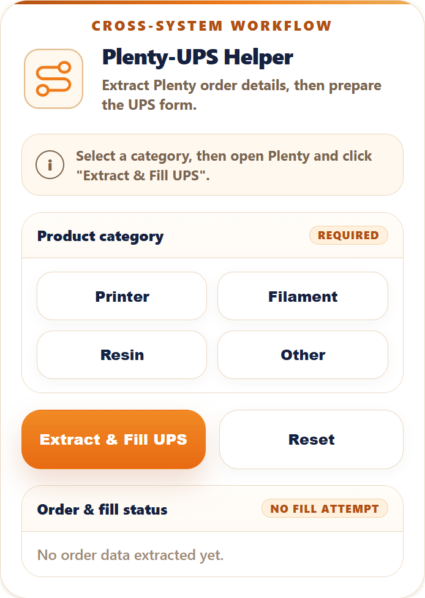
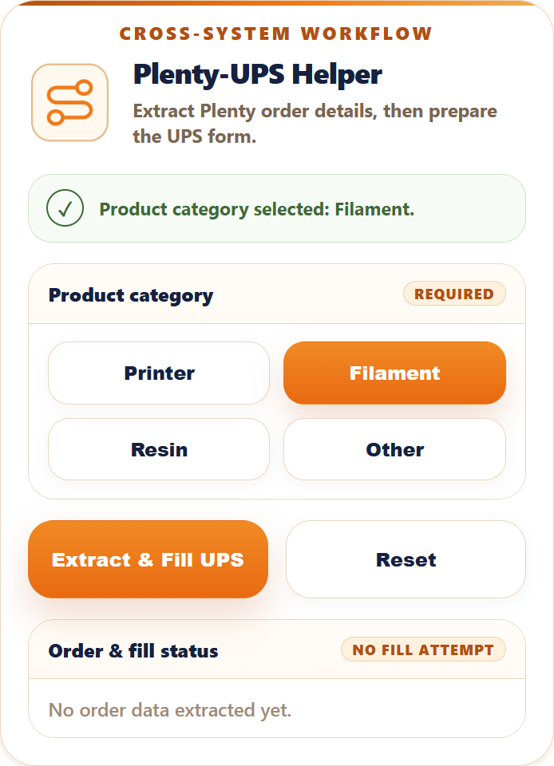
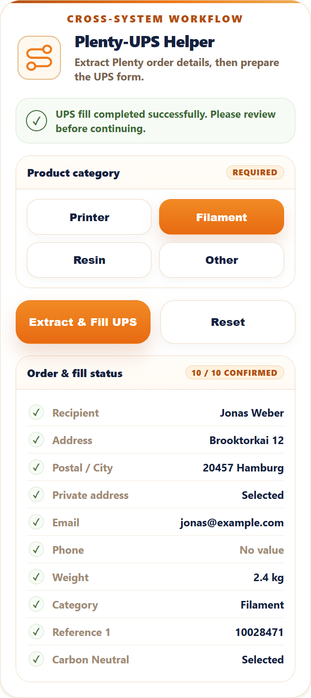

A cross-system workflow that extracts Plenty order details and prepares matching UPS shipment fields for review before the final carrier step.
Problem
Plenty order details, package context, and shipment values had to be moved into UPS preparation by hand.
System
The extension reads the Plenty order, lets the user choose product category, and prepares matching UPS values.
Control
The user keeps status, extracted data, and fill results visible before continuing with the carrier workflow.

✦
Initial state
Start from a controlled workflow panel.
The popup opens with the category choice, status message, workflow action, and an empty fill-status preview. The process starts deliberately instead of silently changing carrier fields.

✦✦
Category selected
Add shipment context before filling.
Product category is selected before the workflow runs, so the UPS shipment data can be prepared together with the Plenty order details instead of added as a separate manual step.

✦✦✦
Fill review
Confirmed fields stay visible after the UPS step.
The result view shows recipient, address, postal city, email, weight, category, reference, and selected options with a clear confirmation status. The workflow output remains visible for review.
Cross-system handoff. Plenty order data becomes UPS-ready shipment data without retyping each field into the carrier page.
Manual control remains. UPS login, review, and final shipment confirmation are not hidden; the user still checks the carrier page before continuing.
Project scope
What this page shows.
Public sample data. Visible names, addresses, order references, package values, and fill-status rows are examples for demonstration.
Client details stay private. Account access, internal business rules, real order data, and real shipment details are not included.
Independent workflow. Plenty and UPS are referenced only as the systems this workflow connects. This project is independent and not affiliated with Plenty or UPS.